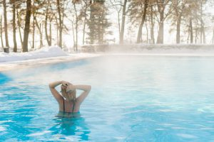

Descripción: ¡No dejes que el frío te detenga! Mantente activo y en forma este invierno con nuestras clases de natación a precios especiales. Nuestro ambiente climatizado te permitirá disfrutar del agua sin preocuparte por el clima.
Detalles de la Promoción:
- Duración: De noviembre a febrero.
- Clases incluidas: 8 clases al mes.
- Precio Regular: Q600.
- Precio Promocional: Q450 (¡Ahorra Q150!)
- Beneficios Adicionales:
- Evaluación de habilidades inicial gratuita.
- Acceso a la piscina climatizada.
- Descuento del 10% en la tienda de artículos de natación
|
Contamos con:
- Piscinas techadas.
- Instructoras altamente capacitadas y con amplia experiencia.
- Piscina semi olímpica de 5 carriles.
- Piscina grande temperada a 28-29 grados.
- Piscina pequeña para bebes y niños temperada a 32-33 grados.

|